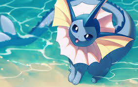
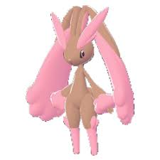

E AÍ, GALERA, VOCÊS SABIAM QUE EM TERMOS DE REPRODUÇÃO ENTRE HUMANOS E POKÉMON FÊMEAS, VAPOREON É O POKÉMON MAIS COMPATÍVEL COM HUMANOS? NÃO SÓ ELES ESTÃO NO GRUPO DE OVOS DE CAMPO, QUE É COMPOSTO PRINCIPALMENTE POR MAMÍFEROS, VAPOREON TEM EM MÉDIA 0,90 METROS DE ALTURA E 29 KG, O QUE SIGNIFICA QUE ELES SÃO GRANDES O SUFICIENTE PARA AGUENTAR PUS HUMANOS, E COM SEUS IMPRESSIONANTES STATS DE HP E ACESSO A ACID ARMOR, VOCÊ PODE SER BRUTO COM UM. DEVIDO À SUA BIOLOGIA PRINCIPALMENTE AQUÁTICA, NÃO TENHO DÚVIDAS DE QUE UM VAPOREON EXCITADO SERIA INCRIVELMENTE MOLHADO, TÃO MOLHADO QUE VOCÊ PODERIA FACILMENTE FAZER SEXO COM UM POR HORAS SEM FICAR DOLORIDO. ELES TAMBÉM PODEM APRENDER OS MOVIMENTOS ATTRACT, BABY-DOLL EYES, CAPTIVATE, CHARM E TAIL WHIP, ALÉM DE NÃO TER PELOS PARA ESCONDER OS MAMILOS, ENTÃO SERIA INCRIVELMENTE FÁCIL PARA UM TE DEIXAR NO CLIMA. COM SUAS HABILIDADES WATER ABSORB E HYDRATION, ELES PODEM SE RECUPERAR FACILMENTE DA FADIGA COM ÁGUA SUFICIENTE. NENHUM OUTRO POKÉMON CHEGA PERTO DESSE NÍVEL DE COMPATIBILIDADE. ALÉM DISSO, CURIOSIDADE, SE VOCÊ TIRAR O SUFICIENTE, PODE FAZER SEU VAPOREON FICAR BRANCO. VAPOREON É LITERALMENTE FEITO PARA PU HUMANO. STAT DE DEFESA PROFANO + ALTO HP + ACID ARMOR SIGNIFICA QUE ELE PODE AGUENTAR P*U O DIA TODO, TODOS OS FORMATOS E TAMANHOS E AINDA QUERER MAIS.

Anos se passaram após a extinção dos humanos, onde eles causaram sua própria destruição em meio de guerras e batalhas imorais apenas por poder. Agora, o mundo pertence totalmente e somente aos Pokémon, que estavam livres para serem o que são, ou até mais do que deveriam ser. Décadas se passaram rapidamente. O mundo não era mais o mesmo. Os Pokémon agora haviam evoluído mentalmente em um curto periodo de tempo nas gerações, adquirindo responsabilidades e funções sociais que antes eram necessários da ajuda de humanos para eles praticarem. Nem todos os Pokémons tiveram a capacidades de evoluir, entretanto, os que conseguiram agora se multiplicaram e pareciam bastante com humanos, usando roupas, andando sobre as duas patas(cascos) e interagindo entre si. Era como se os humanos e os Pokémons tivessem se fundido. O mundo mudou, assim como a convivência nele. Mas onde podemos aprender sobre essa nova sociedade maravilhosa de Pokémons que se formou? Senhoras e Senhores, apresento à vocês a Pokémon School, uma escola especialmente para aqueles que busca uma experiência agradável com alunos com diversas personalidade e professores com métodos de ensino variados. Nossa escola proporciona muito aos nossos alunos: Oferecemos dormitórios para alunos separados por gênero aos alunos que frequentaram o Ensino Médio; Alimento para o dia inteiro (café, almoço e jantar); Além de darmos permissão aos alunos de saírem do território da escola após as aulas (iniciada às 10:00 e terminadas às 15:00). Também oferecemos atividades extracurriculares para os alunos que tenham gostos por determinados assuntos, como aulas de Música, Pintura, Teatro, Futebol, Basquete, Luta, entre muitos outros. Bem-vindos à Pokémon School, a escola feita por Pokémons e para Pokémons escreverem o início de suas vidas nesse mundo pertencente agora somente aos Pokémon.